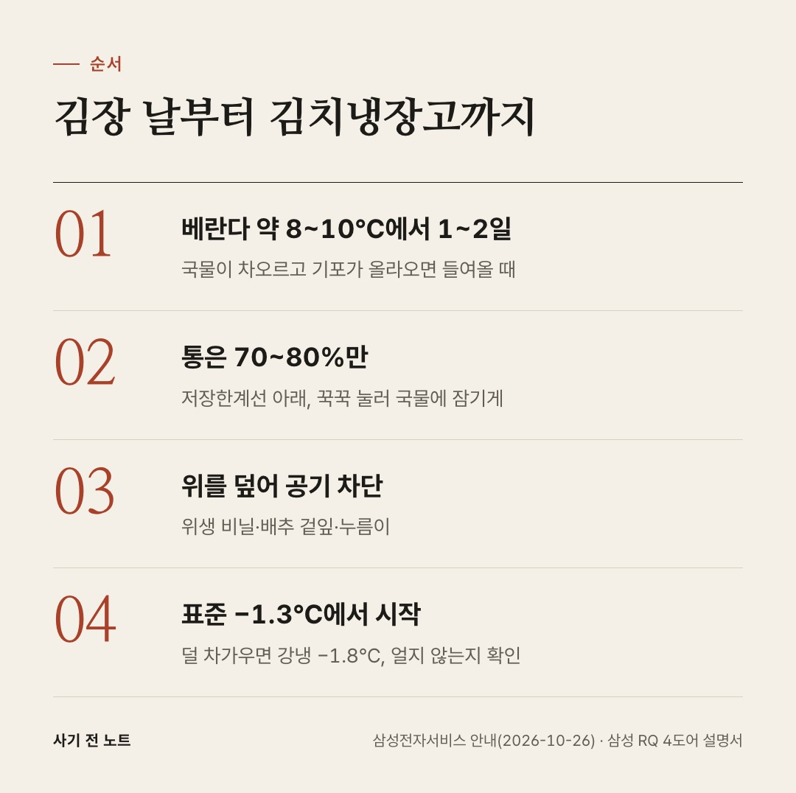

살림
김치냉장고 온도는 몇 도? 김장 김치는 -1.3℃, 넣기 전 베란다 1~2일
김장 김치는 담근 날 바로 김치냉장고에 넣지 않고, 베란다처럼 약 8~10℃인 곳에서 1~2일 익힌 뒤 넣어 일반 김치는 표준 -1.3℃에 두면 돼요(삼성전자서비스 안내, 2026년 10월 26일 게시). 익히는 건 베란다에서, 오래 두는 건 김치냉장고에서 나눠 하는 셈이에요. 통은 70~80%만 채우고 국물에 잠기게 담는 게 같이 따라오는 조건이에요.

베란다에서 언제 들여오면 되나요?
1~2일은 기준일 뿐이고, 같은 안내에 옮길 때를 알려 주는 신호가 따로 있어요.
- 국물이 차오르고 기포가 올라오기 시작할 때
- 풋내가 빠지고 신맛이 나기 시작할 때
- 국물은 익었는데 배추는 아직 덜 익은 맛일 때
숙성 속도는 김치 종류, 소금·양념 양, 기온에 따라 달라서 중간중간 맛을 보라는 단서가 붙어 있어요.
김치냉장고 몇 도로 맞추나요?
삼성 스탠드형 김치냉장고의 일반 김치 보관 온도는 세 단계예요.
| 단계 | 온도 | 이럴 때 |
|---|---|---|
| 강냉 | -1.8℃ | 김치가 덜 차갑게 느껴질 때 한 단계 낮춤(얼 수 있어 상태 확인) |
| 표준 | -1.3℃ | 시작 온도 |
| 약냉 | -0.8℃ | 가장 높은 단계 |
단계 사이 간격은 0.5℃예요. 저염 모드는 일반 모드보다 온도가 높아 저염 김치에만 쓰라는 설명도 있어요. 다른 회사 제품은 단계 이름과 온도가 다를 수 있으니 내 모델 설명서의 표를 먼저 보세요.
숙성 기능을 쓰면 더 빨리 맛있어지나요?
빨리 시어지는 쪽이에요. 같은 안내는 숙성 기능을 쓰면 보관 모드보다 빨리 시어져 보관 기간이 짧아질 수 있다고 적었어요. 오래 두고 먹을 김장 김치라면 베란다 1~2일 뒤 보관 모드가 맞고, 숙성 중에는 문을 자주 열지 말라는 주의도 있어요.
- 겨우내 오래 먹을 김장 김치 → 베란다 1~2일 → 보관 모드 표준 -1.3℃
- 빨리 익혀 먹을 김치 → 숙성 기능(보관 기간이 짧아질 수 있음)
- 저염으로 담근 김치 → 저염 모드
냉기가 약한 것 같은데 온도부터 내려야 하나요?
꼭 그렇지는 않아요. 같은 안내는 설정 온도가 높을 때뿐 아니라 보관 식품이 많을 때도 냉기가 약하게 느껴질 수 있다고 적었어요. 김장 직후처럼 칸이 꽉 찼다면 온도를 내리기 전에 그것부터 보세요.

통은 왜 70~80%만 채우나요?
이유는 가스와 국물이에요. 삼성 설명서는 통 안쪽 저장한계선 아래로만 넣으라고 하는데, 많이 넣으면 통 안에 가스가 차 국물이 넘칠 수 있고, 넘친 틈으로 공기가 들어가 김치가 변할 수 있다는 설명이에요. 10L 통이라면 7~8L까지만 담는 셈이에요. 꾹꾹 눌러 국물에 잠기게 담고, 위는 위생 비닐이나 배추 겉잎, 누름이로 덮어요.
공기에 닿은 표면에는 골마지가 생기기 쉽고, 골마지가 생긴 김치는 점점 물러지며 군내가 난다고 서비스 안내는 적었어요. 막는 방법은 두 가지, 공기 차단과 4℃ 이하 저온이에요.
확인하지 못한 것
LG·딤채 등 다른 회사의 온도 단계는 확인한 자료가 없어 숫자를 쓰지 않았어요. 숫자는 모두 아래 삼성 공식 자료 두 곳에서 옮겼고, 이 방법으로 직접 보관해 본 기록은 아니에요.
출처
- 삼성전자서비스 '김치냉장고, 음식의 신선함을 지키는 방법을 알아보세요'(2026년 10월 26일): https://www.samsungsvc.co.kr/solution/2912267
- 삼성 김치냉장고 RQ 4도어 사용 설명서 '김치통 사용하기': https://downloadcenter.samsung.com/content/PM/202501/20250103100230952/KO/DA68-04789D_RQ9500D_KO_KO_c4_s1.html